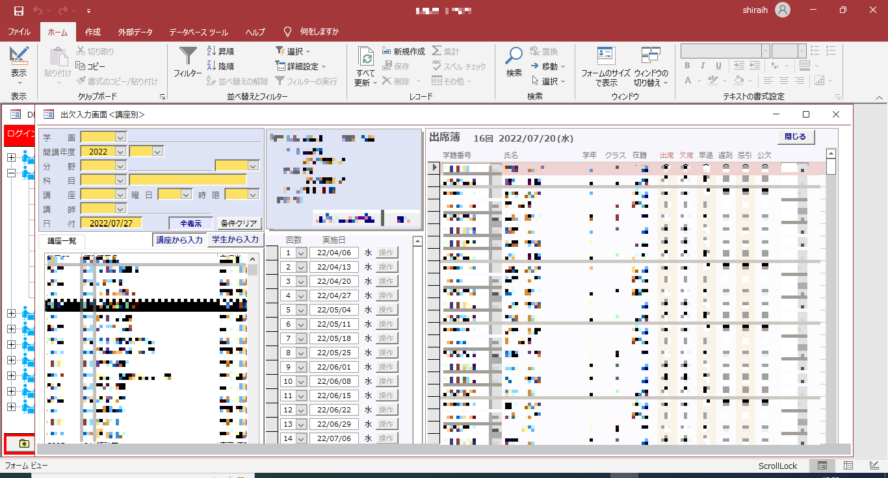
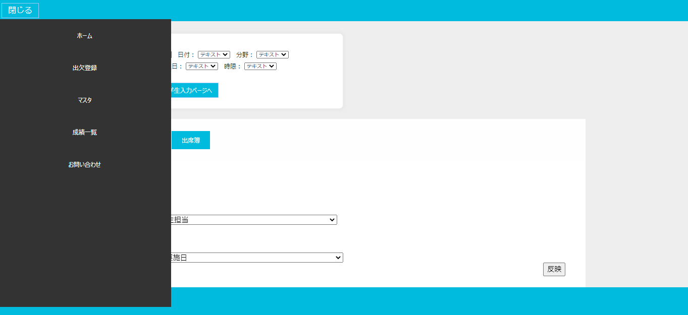
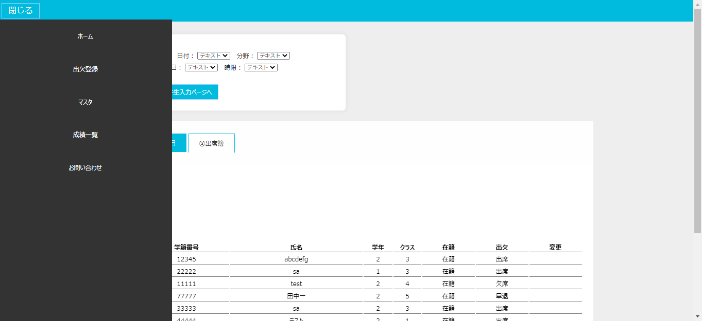
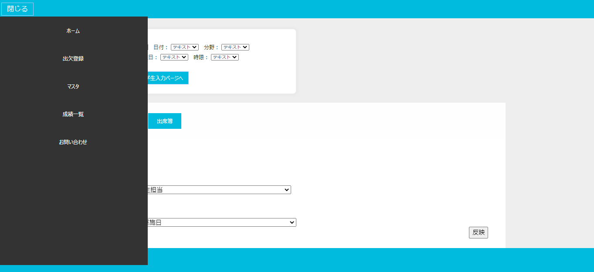
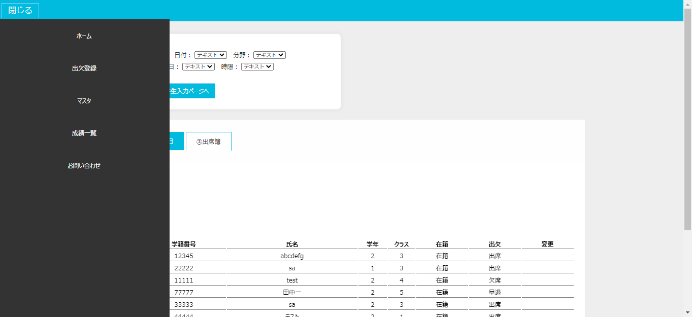

※細かい部分は見せられません、ご了承ください。
入社間もないながらも上記のAccessを利用した自社製品（学校様向けの業務システム）のWeb版の新規開発を任されました。
言語は保守面を考え社内システムでも扱っているPythonを用いDjangoフレームワークを利用しました。
Accessを利用した自社製品のWeb版の新規開発

Access版自社製品

制作したワイヤフレーム
Webデザインについてはほぼ未経験であったもののまずは上記のワイヤフレームの制作から始めました。
 

制作しているWeb版画面
上記のようなWeb版を制作しています。
3枚目の画像のようにJavascript（jQuery）を用いて開閉式のサイドメニューなども搭載しています。
Access版と比べると項目が少なく見えますが、検索条件を設定するとデータが表示されるようになっています（1枚目→2枚目参照）
現状として、自身はReactなどを扱えないのですがこのWeb制作では
「MPAでありながらいかにSPAの使用感を再現するか」
という方針で制作に入りjQueryでの単純なAjax通信を用いています。
＜この業務を通して＞
Pythonでのサーバーサイドはもちろんのことフロントエンド、そもそものデザインから広く関わり、
この業務を通してUIデザインにも興味を持ち始めています。
また現在の転職活動の主軸である「よりWeb分野に専門性を持って携わりたい」と強く思うきっかけとなりました。
3枚目の画像のようにJavascript（jQuery）を用いて開閉式のサイドメニューなども搭載しています。
Access版と比べると項目が少なく見えますが、検索条件を設定するとデータが表示されるようになっています（1枚目→2枚目参照）
現状として、自身はReactなどを扱えないのですがこのWeb制作では
「MPAでありながらいかにSPAの使用感を再現するか」
という方針で制作に入りjQueryでの単純なAjax通信を用いています。
＜この業務を通して＞
Pythonでのサーバーサイドはもちろんのことフロントエンド、そもそものデザインから広く関わり、
この業務を通してUIデザインにも興味を持ち始めています。
また現在の転職活動の主軸である「よりWeb分野に専門性を持って携わりたい」と強く思うきっかけとなりました。